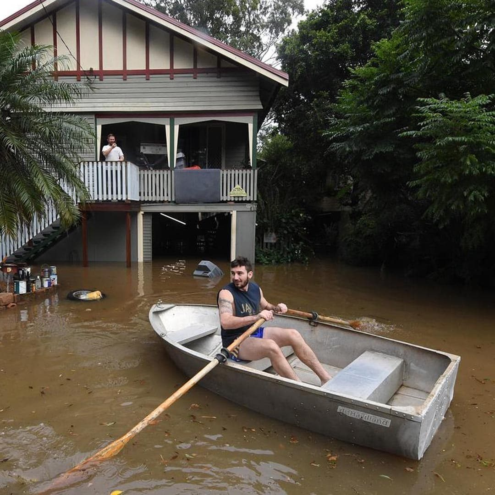

Tropical CycloneDebbie 2017.
The strongest tropical cyclone to strike Queensland since Marcia, and the costliest in Australia since Yasi. Watermark crews were on the ground within 48 hours.
"The team needed to be people first and trade professionals second; leading with their hearts and creating expert solutions with their heads."Watermark Constructions, Whitsundays recovery
The event
Severe Tropical Cyclone Debbie made landfall near Airlie Beach on Queensland's Whitsunday coast on Tuesday 28 March 2017, after crossing the Whitsunday Islands as a large and powerful category four system. The cyclone devastated resort islands including Hamilton and Daydream Islands, as well as the towns of Airlie Beach and Proserpine.
The impacts were two fold: storm damage from the high winds associated with the cyclone, and the very heavy rain that came in its aftermath. Over 40,000 homes were damaged or destroyed in Debbie's wake.
Mobilised within 48 hours
Having left a trail of destruction across the Whitsunday Islands, Airlie Beach, Proserpine, Bowen and Collinsville, Watermark Constructions mobilised crews from both our Mackay and Townsville bases within 48 hours of the cyclone passing.
For 10 days no one was able to enter Airlie Beach to set up a base of operations, as the town had no power. Our crews travelled from the Mackay base each day to complete emergency make safe works and assess for further damage. Once power was restored, a base was established in Airlie Beach and the recovery strategy began to take shape.

Scale and logistics
Due to the high volume of properties damaged across all affected townships, and the complexity of those damages, we drew on our vast internal trade and subcontractor network to manage the works. Repairs included over 40 properties on Hamilton Island, which presented a suite of additional challenges due to transport and logistics requirements.
While materials, labour, machinery and transportation were strategised, Watermark's on site supervisors and assessors were meeting and supporting people facing some of the hardest moments of their lives. Some had lost their livelihoods, their possessions and a lifetime of treasured mementos. The full breadth of the team were not just there to provide expert construction advice and workmanship; they were also there to be shoulders to cry on and ears to listen.
A year long recovery
Working alongside local and state government authorities, and under the auspice of numerous national insurance companies, a year long recovery plan was enacted. Watermark Constructions laid down roots in the community and remains alongside these communities to this day.
Brendan Woods, Construction Manager, said of the event at its closure: "With every disaster event of this nature our team develops a broader understanding of what successful customer touch points need to look like. Who and what we need to be for people to feel safe in our care, trust us to listen, and tailor a repair method and schedule to match their individual circumstance and needs."